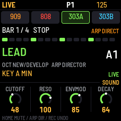
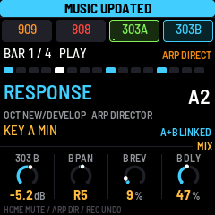
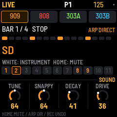

Live5 performer interface
Live5 starts on LIVE, a single performance screen. It shows colored target selection/activity, four-bar phase, sixteenth-note progress, Director queue status, the selected instrument/role, and the four current knob values. This is the musical interface; the old PERF screen remains CPU diagnostics.



Start playing
- Boot on 303 A. Press OCT+ for a phrase, then PLAY.
- Tap ARP to ask the Director to coordinate B and the drum kit. While playing, it waits for the next four-bar boundary. Tap ARP again to cancel a pending plan.
- The first four black keys select 909, 808, 303 A and 303 B. Select a drum kit and press OCT+ to generate it directly, or use the Director from a 303 for 909.
Director constraints remain: nonempty A, forward 16-step/sixteenth-note parts, automatic mutation off, no legacy song or pattern chain. The screen says DIRECTOR NOT READY if those conditions are not met. It does not invent sections or claim an autonomous song arranger has been implemented.
Direct controls
All key numbers below count white or black keys separately, from the left. Hold a modifier, press the target/key or turn a knob, then release the modifier.
| Control | Behavior in LIVE |
|---|---|
| Black 1–4 / ALGORITHM | Select 909 / 808 / 303 A / 303 B. Selection never mutes or generates. |
| SEL + black 1–4 | Toggle a target in the selection; at least one remains. The last selected member becomes knob focus. |
| White 1–11 on drums / PRESETS | Select the drum instrument. White keys audition it while stopped; during playback selection is silent. |
| White keys on a 303 | Play temporary notes; selecting another target or leaving LIVE releases them. Black keys retain their selection role. |
| SELECT | Tempo. It never pages the LIVE screen. |
| PRESETS on a 303 | Focused synth's waveform. Held EDIT also displays that value. |
| Knobs, no modifier: 303 | Cutoff, resonance, envelope modulation, decay. |
| Knobs, no modifier: drums | Tuning, snappy/attack/tone (instrument-dependent), decay, drive. Missing native controls remain empty. |
| EDIT + knobs: 303 | Accent, waveform, drive amount, drive type. Choose Soft/RAT to enable the 303 drive. |
| EDIT + knobs: drums | Instrument level, pan, reverb send, delay send. |
| EDIT + PRESETS on drums | Instrument distortion type. |
| LFO + knobs | Selected part level, pan, reverb send, delay send. |
| SEL + LFO + knobs | Drum-instrument level/pan/sends; on a 303, its part level/pan/sends. |
| ENV + knobs: 303 | Density, accent chance, slide chance, octave range. These configure the generator; OCT+ or OCT- applies a musical action. |
| ENV + knobs: drums | Weird, Full, swing, accent velocity. Weird/Full regenerate through the existing mailbox. |
| FX + knobs | Master DJ filter, kick pump, delay feedback, reverb return level. These are explicitly master/shared-return controls. |
| PLAY | Start/stop. |
| SAVE | Save project. Runtime captures, musical undo and manual mutes are not newly made persistent. |
For several selected 303s, sound controls move each selected instrument by the same relative delta, preserving differences until a parameter reaches a bound. Native/extra/composition controls only affect selected targets in the focused family (303s or drums). Part mixing affects all selected targets. Master controls apply once. Drum Weird/Full knobs affect the focused kit because that generator uses one outstanding request; OCT actions can compose both selected kits atomically. Encoder changes are relative, so changing target/layer cannot jump to an absolute knob position. Releasing a layer returns to native sound controls immediately.
Mute, solo and restore
| Gesture | Action |
|---|---|
| HOME + black 1–4 | Toggle part mute. |
| HOME + white 1–11, drums focused | Toggle that drum instrument. Remains available with FX held. |
| REC + black 1–4 | Solo that part. Repeat the same solo to clear it. |
| REC + white 1–11, drums focused | Solo that drum instrument. |
| REC tap while soloing | Clear solo and restore the pre-solo mix. |
| HOME + SEL | Restore the mix captured before the first manual mute gesture; with no capture, explicitly unmute all. |
Solo retains existing explicit manual mutes rather than silently unmuting their targets. A new solo replaces the old solo. A manual mute clears solo first, then applies the new manual choice. Leaving LIVE restores a temporary solo. Initial drum generation still follows live4's kick/hats starting mix and manual priority.
Musical operations
| Gesture | Action |
|---|---|
| OCT+ | New material for selected targets. |
| OCT- | Develop selected 303 motifs; reseed selected drum grooves at their current coordinates. Straight standards intentionally remain recognizable. |
| ENV + OCT+ | LIKE each selected member (independent per-member captures). |
| LFO + OCT- | RETURN all selected captures in one publication; refuses the action if any selected capture is missing. |
| REC tap | One-level musical undo, preserving later sound and mute changes. While a Director plan is queued, cancels it instead. |
| REC + OCT+ / HOME + PLAY | Musical redo. |
| HOME + REC | Alias for musical undo. |
| ARP | Director request; again cancels a pending Director plan. |
New/develop/RETURN prepare fixed snapshots on main and apply them together at an audio-block boundary. A changed source or pattern switch cancels a stale plan. The one-level musical history covers these actions, drum-coordinate regeneration, and an applied Director ensemble. It contains notes/hits and generator settings, not patches, levels, sends, automation or mutes. New musical actions replace this one-level history. It resets on project initialization/reboot. The legacy editor retains its separate, broader undo/redo system.
LIKE requests for several members use the existing one-slot capture service in sequence; wait for their acknowledgments before another composition request. RETURN is atomic across the selected members. The system refuses overlapping composition requests; it never waits for them in audio. Automatic 303 mutation must be off for these performer composition operations.
Momentary effects
Hold FX + white 1 / 2 / 3 / 4 for master low-pass / high-pass / pump / drive respectively. The screen names the master target and active gesture. The underlying project pots are retained; release restores the latest project values. Releasing FX, changing selection or leaving LIVE also restores the effect. A knob turn ends a temporary effect before applying the manual change.
One momentary effect is active at a time; pressing another replaces it. Releasing the current effect returns to the live settings rather than resuming an older held gesture. Master filter restoration includes its exact mode, cutoff and resonance, preserving a custom underlying filter configuration.
Not implemented here: per-drum DJ filtering, per-target audio repeat/looper, chopper, tape stop and section/QUEUE behaviors. The UI does not provide fake controls for these missing DSP/Director features. Per-303 drive and sends are independent; the momentary gestures above target the master only.
Editor and configuration access
SEQ opens detailed step editing. HOME opens the old pattern/song workspace. GLO opens configuration. Hold HOME and tap EDIT to return directly to LIVE from these screens. Entering LIVE clears recording and legacy song playback, releases keyboard-held notes and restores a temporary solo/effect on exit. Held EDIT, ENV, LFO and FX remain temporary layers in LIVE; tapping them does not open the old pages. REC is musical undo/solo here; recording remains in SEQ.
In the browser, Shift-click a modifier to latch it, use the other control, then click the modifier again to release it. Refresh the emulator to load live5.